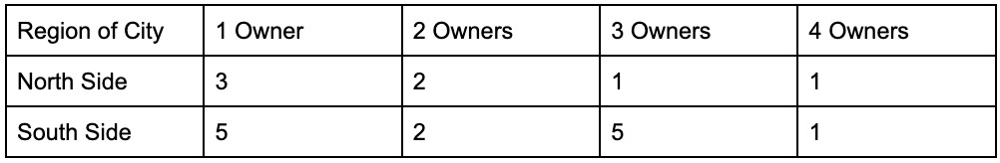

by Jana Safy & Hameed Almukhtar
Last updated on Novmeber 28, 2024
for Data Visualization for Allwith Prof. Jack DoughertyTrinity College, Hartford CT, USA
Owning a home has long symbolized the "American Dream"—a cornerstone of financial stability. Yet, for many, achieving this dream remains a challenge, as housing costs soar, and affordability fluctuates across cities and towns. Community Land Trusts (CLTs) offer a promising solution. These non-profit organizations are designed to bridge the gap between housing needs and affordability. CLT’s purchase land and then sells the homes located on the properties to low-income residents. By selling or renting homes—but not the land—CLTs drastically reduce housing costs. To ensure that these properties remain affordable to the CLT’s respective community, residents must agree to a set of terms. The most significant term is that the resident, at the time they wish to sell, must sell the home at a restricted price to keep it affordable. The resident may still realize appreciation from any improvements they made to the home. This way residents are able to grow their personal wealth, while the property continues to benefit local needs.
Our project focuses on community land-trusts in the Hartford region of Connecticut. Specifically, Urban Suburban Affordables (USA), a Connecticut-based community land trust managed by the Center for Leadership and Justice (CLJ) located in Hartford. The CLJ is a grassroots organization dedicated to advancing social and economic equity across Hartford and its surrounding communities. With a strong focus on empowering historically marginalized populations, they work to address systemic injustices through advocacy, education and community organization. The organization's initiatives span a variety of critical issues, but we will focus on its work on affordable housing in the Hartford region. USA’s portfolio contains over 200 properties which it distributes among those in need of affordable housing. A significant portion of these properties are within the Hartford region (44%), hence looking into the Hartford properties may provide a better reflection of the programs work across the board in the greater Hartford Area (officially known as the Capital Planning region).
Our aim is to discover USA’s effectiveness in ensuring long-term housing affordability and stability for low-income families. To evaluate the success of USA’s program, we will examine how home sales prices and homeownership status have changed over time for a sample of 20 single-family homes within Hartford, selected randomly from the USA’s housing portfolio. By focusing exclusively on single-family homes, we aim to eliminate variables associated with other property types, such as multi-family units or condominiums, that could obscure general trends in home sales prices and ownership patterns. This analysis of USA properties will be compared to broader trends for other homes in Hartford and across Connecticut during the same period. By focusing on these trends, we aim to assess whether efforts to maintain affordability and accessibility in the housing market have been effective.
By understating the impact of USA on addressing housing affordability, we can provide them with critical insight into their model’s effectiveness. This knowledge could also enable the CLJ to advocate for policies that expand the program or address barriers to its effectiveness. Ultimately, this work matters because housing isn’t just about shelter, it’s about creating stable foundations for families to thrive. For the CLJ, ensuring the success and growth of USA is a step toward reducing housing inequality and empowering Hartford’s communities to build a more just and equitable future.
Links must begin and end with "a" anchor tags, with the web address inside either single or double quotes. If you need guidance, check out this W3Schools HTML Tutorial.
The data reveals a compelling story about the impact of Urban Suburban Affordables (USA) on housing affordability and stability in Hartford. Through an analysis of pricing trends and ownership patterns, we uncovered how USA’s Community Land Trust model has maintained affordability while allowing homeowners to build equity.
Figure 1: Explore the interactive chart This chart tracks the estimated home values of 20 USA program homes in Hartford, beginning with the earliest acquisition in 1991. The bold black line shows the median value, which has risen from approximately $50,000 in the early 1990s to over $200,000 in recent years. Individual home values (gray lines) vary, but all follow a similar upward trend, with no properties showing stagnation or significant depreciation. This data illustrates the natural appreciation of housing assets over time, bolstered by factors like inflation, neighborhood development, and increased housing demand.
Figure 2 complements the findings in Figure 1 by illustrating the geographical distribution of percent changes in home values since acquisition. Each circle represents a property, with the size of the circle corresponding to the percentage increase in value. The visual highlights that all properties in the sample experienced substantial appreciation regardless of their location, further emphasizing the consistency of value growth across the program. For example, homes in central neighborhoods saw price increases comparable to those in outlying areas, demonstrating that the value appreciation is not localized but widespread.
Combining the analysis of Figure 1 with the geographical perspective of Figure 2, the findings underscore the success of the USA program in acquiring homes that align with broader market trends of appreciation. Both figures reinforce that the properties have not only retained but significantly increased their value over time
Figure 3 shows the median sales price of houses sold in the United States from 1990 to 2024, with data sourced from the U.S. Census and U.S. Department of Housing and Urban Development. Over the past three decades, median home prices have experienced steady growth, starting at approximately $120,000 in the early 1990s and climbing to $420,400 by the third quarter of 2024. The consistent growth in the national housing market aligns closely with the price appreciation seen in the USA program homes sample (as illustrated in Figure 1). Despite resale restrictions, which cap the sale price to maintain affordability, the program’s home values have risen in step with broader market trends. For example, USA home values have appreciated by 103%-400%, closely mirroring the increase in national median home prices over the same period, which grew from $168,800 in the third quarter of 2000 to $420,400 in the third quarter of 2024—a 149% increase. These findings portray the program's capability to provide a means for its occupants to build equity, comparable to trends nationwide. In other words USA home owners are not put at a disadvantage in building wealth when participating in the program.
Figure 4 shows the typical home values for the Hartford-East Hartford-Middletown area in the 35th to 65th percentile range from 2000 to 2024. Similar to the USA program sample, this market experienced steady growth in home values over time, punctuated by a significant dip during the 2008 housing crisis. After stabilizing post-2012, the market saw accelerated growth from 2020 onward, with home values reaching approximately $300,000 in 2024.
Despite dramatic appreciations in our sample, the USA program’s resale restrictions have kept prices below comparable market-rate homes shown in figure 4. This means that while an average neighborhood home in the area may now list for $300,000, USA homes in our sample remain available to moderate-income buyers at prices of approximately $250,000 and under.
These findings highlight the dual impact of the USA program: enabling substantial wealth-building for homeowners while ensuring long-term affordability. By tethering resale prices to a capped formula, the program mitigates the effects of market forces, safeguarding access to housing for future buyers. This strategy not only strengthens community stability but also provides a replicable model for addressing housing affordability amid rising property values.
Most of the homes in the sample of 20 USA homes have been owned by three or fewer families since their acquisition by USA. This observation highlights the effectiveness of Community Land Trust (CLT) homes in fostering long-term stability. The low turnover rate is significant because it reflects the success of CLTs in achieving their mission of providing sustainable housing solutions for low-income families.
The relatively low number of families that have owned these homes, makes it evident that CLTs are not just offering temporary housing, but rather creating opportunities for families to establish roots in their communities. This stability is crucial for fostering economic security, community engagement, and social cohesion. For families, stable housing can lead to better educational outcomes for children, improved health, and stronger financial footing as they are less likely to face the disruptions of frequent moves or evictions.
Additionally, the model's ability to preserve affordability across ownership transitions ensures that these homes remain accessible to other low-income families in the future. This aligns with the long-term goal of CLTs: breaking the cycle of housing instability and addressing systemic inequities in housing access. By offering a pathway to stability and community integration, CLTs make a profound contribution to addressing the housing crisis and building resilient communities.
Figure 5 categorizes the number of times homes in our USA sample have been transferred (ownership changes) based on their location within Hartford—either the North Side or South Side.
Across the entire sample, the highest number of owners recorded for any single home is four, which occurred in just two houses, representing 10% of the sample. These two homes, acquired in 1992 and 2000, reflect the rarity of frequent ownership turnover in the program.
Notably, a significant portion of the homes (40%) have had only one owner since their acquisition, showcasing a high level of stability and long-term occupancy among homeowners. These single-owner homes are distributed between the North Side (3 homes) and the South Side (5 homes), highlighting a slight tendency toward greater stability on the South Side.
Meanwhile, 20% of the homes have had two owners, reflecting moderate turnover. These homes are evenly distributed between the North and South sides, suggesting consistent dynamics across both regions for this category.
Interestingly, 30% of the homes have had three owners, indicating a more dynamic turnover for a subset of the program's homes. All of these homes are located on the South Side, suggesting that turnover may be higher in this region due to factors such as market demand, personal circumstances, or mobility trends among residents.
This distribution highlights the program's overall success in maintaining stability while allowing some flexibility for ownership transitions. The relatively small percentage of homes with three or more owners indicates that the program has largely achieved its goal of fostering long-term residency and community building, particularly among single-owner households. The balance between stability and turnover also reflects the program's capacity to accommodate changing homeowner needs over time.
According to data from the American Community Survey (ACS), a comprehensive governmental survey that tracks housing data across the United States, only 20.77% of Hartford residents have been homeowners since 1990. This remarkably low rate of homeownership highlights a significant challenge in fostering housing stability and economic equity within the city.
In this context, the work of USA takes on particular importance. By creating affordable housing opportunities and supporting long-term stability for low-income families, USA has the potential to make a substantial impact in increasing homeownership rates. This is especially vital in communities like Hartford, where the barriers to homeownership are pronounced, and the need for stable, affordable housing solutions is critical.
We gathered historical house prices and the years of purchase for the properties in question using data from Zillow, a leading real estate marketplace that provides information on home values and property histories. Recognizing that it can be challenging to pinpoint the exact year each home was acquired by USA Properties, we made an assumption: if the acquisition date was uncertain, we considered any purchase from the early 1990s onward as a valid starting point.
To benchmark and compare our findings with broader trends in the housing market, we sourced national data from the United States Census Bureau. This government agency provides comprehensive and reliable statistics on housing prices and trends across the United States. By analyzing these publications, we were able to find the average sales price of homes in the nation and compare them to the sales prices of the properties from our sample of USA owned properties. This comparison allowed us to assess how USA Properties stay affordable in comparison to the national real estate market.
We also gathered data from the American Community Survey (ACS), a governmental survey that tracks housing trends across the United States, to analyze homeownership rates in Hartford from 1990 to the present. This data provided an estimated percentage of homes currently owned by their residents, offering valuable insight into local housing trends.
To visualize our findings, we utilized Datawrapper, a Germany-based platform known for its user-friendly tools for creating interactive maps and graphs. Unless otherwise noted, all the maps featured in this project were created using Datawrapper.
Bennefield, R. L. (2021a, October 8). Census 2000 brief: Home values: 2000. Census.gov.https://www.census.gov/library/publications/2003/dec/c2kbr-20.html
Bureau, U. C. (2019, April 15). New Residential Sales Press Release. United States Census Bureau. https://www.census.gov/construction/nrs/current/#:~:text=The%20median%20sales%20price%20of,average%20sales%20price%20was%20%24501%2C000.&text=The%20seasonally%2Dadjusted%20estimate%20of,at%20the%20current%20sales%20rate.
Housing unit by year householder moved into unit. Social explorer. (n.d.-a). https://www.socialexplorer.com/reports/socialexplorer/en/report/b20afe48-adb2-11ef-ad35-4f8fb25a2b08
Patriot properties WebPro. (n.d.). http://assessor1.hartford.gov/Default.asp
Real estate, apartments, Mortgages & Home values. Zillow. (n.d.). https://www.zillow.com/
Search Online Records. SearchIQS. (n.d.). http://searchiqs.com/
Tenure (owner-occupied vs renter-occupied housing units). Social explorer. (n.d.-b). https://www.socialexplorer.com/reports/socialexplorer/en/report/fb3d3810-adb2-11ef-af57-4fcb3e8b4a31
Year Householder Moved Into Unit. Social explorer. (n.d.). https://www.socialexplorer.com/reports/socialexplorer/en/report/994a995a-adb1-11ef-86dd-0f6c4c450013